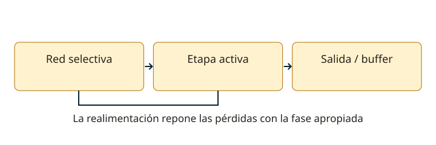

Lección 8 de 16
Osciladores y estabilidad de frecuencia
Aprende cómo una etapa mantiene una oscilación y qué evita que su frecuencia cambie al transmitir.
De un tanque amortiguado a una oscilación sostenida
Un circuito LC intercambia energía entre los campos eléctrico y magnético. Sus pérdidas hacen decaer la oscilación libre. El elemento activo de un oscilador repone esa energía con la fase apropiada. En un modelo lineal de lazo, la ganancia y fase deben permitir el arranque; luego la no linealidad o un control de amplitud limita el crecimiento. Una ganancia excesiva no produce una sinusoide cada vez más limpia, sino recorte y productos no deseados.
Hartley y Colpitts
El Hartley utiliza un divisor inductivo, a menudo una bobina con toma. El Colpitts utiliza un divisor capacitivo. En ambos, reconoce primero el tanque y luego el camino de realimentación. En un Colpitts ideal, la capacidad equivalente del divisor es C1C2/(C1+C2); en Hartley debes considerar el acoplamiento entre las secciones inductivas. Las capacitancias del dispositivo y las cargas alteran la frecuencia respecto al cálculo ideal.

Cristal y osciladores RC
Un cristal piezoeléctrico tiene resonancias y un Q elevado; ayuda a fijar frecuencia. No significa deriva cero: temperatura, carga y envejecimiento cuentan. Un oscilador RC usa redes de fase, como puente de Wien o desplazamiento de fase, y es habitual en frecuencias más bajas. La condición y fórmula concreta dependen de la topología. Aprende a distinguir la función de la red de selección y la del amplificador que compensa pérdidas.
Aislamiento, buffer y multiplicadores
Un buffer o separador reduce la influencia de las etapas siguientes sobre el oscilador. Si cambia la carga y arrastra la frecuencia se habla de pulling; las variaciones de alimentación también pueden desplazarla. Un multiplicador selecciona un armónico y produce n veces la frecuencia de entrada. Un mezclador produce sumas y diferencias de frecuencias; no es lo mismo que multiplicar por un entero. El filtrado elimina los productos no deseados.
Estabilidad y síntesis
La estabilidad se expresa a menudo como variación relativa o partes por millón: Δf/f. Reduce cambios de temperatura, vibración, alimentación y carga; elige componentes apropiados y cuida el montaje. Un lazo de enganche de fase o PLL compara una señal dividida con una referencia y corrige un oscilador controlado. Su estabilidad depende de la referencia y del lazo; su ruido y productos espurios también afectan la recepción y transmisión.
Del cálculo a la comprobación
Estima la resonancia con f0 = 1/(2π√LC), incluyendo capacidades equivalentes. Comprueba que pueda arrancar y estabilizar amplitud en la banda y alimentación previstas. Usa un acoplamiento de medida que no cargue el tanque. Un frecuencímetro puede indicar una frecuencia estable aunque haya armónicos: observar el espectro aporta otra información. Revisa el encendido, la deriva térmica y el cambio de frecuencia al activar la transmisión.
Resuelve paso a paso
Divisor capacitivo
C1 = C2 = 200 pF: Ceq = 100 pF. Con L = 2,5 µH, la resonancia ideal está cerca de 10,07 MHz. El circuito real añade capacitancias y carga.
Convertir ppm a Hz
Una variación de 2 ppm a 145 MHz equivale a 145.000.000 × 2/1.000.000 = 290 Hz. La misma variación relativa produce más Hz en una frecuencia mayor.
Comprueba lo aprendido: ¿Qué etapa ayuda a que el amplificador de potencia no arrastre al oscilador?
El buffer o separador. Aísla la carga; no sustituye la regulación y estabilidad propias del oscilador.
Preguntas oficiales de este tema
Selecciona una alternativa y pulsa «Comprobar respuesta». Si fallas, podrás ver la respuesta correcta para seguir aprendiendo. Las preguntas con incidencias documentales se muestran solo para consulta y no se califican.
Continúa tu recorrido
Fuentes de estudio: programas técnicos y banco SUBTEL, apéndices A–E, versión 06/12/2020, y sus solucionarios oficiales. Reglamentación: Decreto 523, versión 21/06/2013; evaluación: Resolución Exenta 2620/2023. Revisión documental: 11/11/2026. Explicaciones, cálculos y esquemas didácticos de RUFCOM. Consultar documentos oficiales.